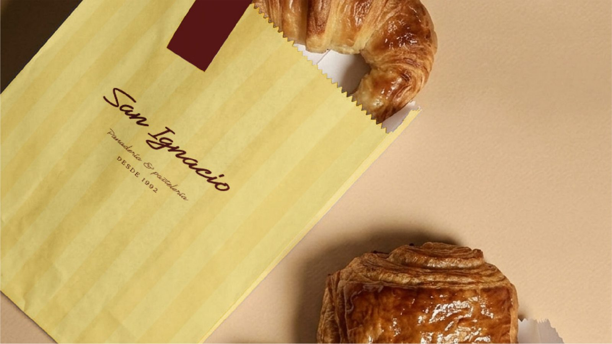

Identidad visual con intención.
Hagamos que tu marca se vea tan bien como es tu proyecto. Soy Lucía Mateo, Diseñadora de Marca y Comunicación Visual.
Marcas que empezaron sin identidad clara y terminaron con un sistema propio.
Tres proyectos de branding e identidad visual, cada uno con su propio sistema de marca.

Tripzo
Tesis final de grado: una agencia de viajes temáticos pensada como modelo de negocio real, con propuesta de valor, público y sistema de marca definidos desde cero.

Panadería San Ignacio
Ejercicio personal de rebranding sobre un negocio familiar con más de 40 años de historia: una identidad renovada que conserva la cercanía y la calidad artesanal que la caracterizan.

Koru Travel
Cofundé esta agencia de turismo en Mendoza y construí su identidad de marca desde cero. Con estrategia de contenido y campañas en Meta Ads, la comunidad creció a más de 4.500 seguidores, generando entre 70 y 100 leads diarios.
De la estrategia
al sistema de marca.
Cuatro etapas para construir una identidad que funcione en cualquier contexto.
Investigar
Entender el negocio, su público y el contexto antes de proponer nada visual.
Estrategia
Definir posicionamiento, tono de voz y propuesta de valor de la marca.
Identidad visual
Construir una identidad de marca incluyendo los elementos que esta pueda requerir. (logo, mapa de color, puesta tipográfica)
Aplicaciones
Llevar la marca a piezas reales teniendo en cuenta posibles canales de comunicación (redes sociales, packaging, papelería, etc.).
Toolkit
Lo que uso a diario para llevar una marca del concepto a la pieza final.
Soy diseñadora de marca y comunicación visual, con base en Barcelona. Mi trabajo conecta el diseño con la estrategia: construyo identidades visuales, pero también pienso cómo esa marca se comunica y crece — desde una campaña en redes hasta la coordinación de un equipo creativo.
- Barcelona, España
- Lic. en Diseño Gráfico (mención en Identidad) — Universidad Champagnat
- Español (nativo) · Inglés (C1)
- Co-fundadora & Diseñadora de Marca Koru Travel 2024–2026
- Diseño Gráfico Vectores, Agencia de Comunicación Digital 2021–2023
- Producción Gráfica Taller Gráfico Castilla 2023–2024
¿Trabajamos juntas en tu próxima marca?
Escríbeme y conversemos sobre tu proyecto, sin compromiso.
luciamateodis4@gmail.com